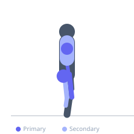
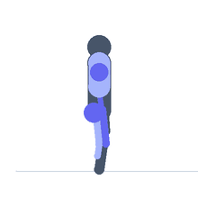

Exercise guide / Prowler Sled Push — High Handles
Prowler Sled Push — High Handles
The high-handle prowler push uses the tall vertical posts of the sled, allowing a more upright body position that shifts the primary demand from the quadriceps toward the deltoids and triceps, with the leg drive producing hip extension more than knee extension. The more vertical trunk angle resembles the mid-stride body position of running rather than the acceleration phase, making it an excellent tool for developing sport-specific pushing power and cardiovascular capacity. The high-handle position also makes this variation more accessible for individuals with limited hip flexion or lower back issues.
Primary muscles
deltoid anterior
triceps long head
gluteus maximus
vastus lateralis
Secondary muscles
pectoralis major sternal
biceps femoris long head
gastrocnemius medial
Stabilizers
erector spinae
transverse abdominis
Equipment


Starting position
- Grip the high handles of the prowler sled. Stand upright or at a moderate forward lean (20–30° from vertical). Arms are approximately straight.
Setup
- Load to the desired weight. The more upright position allows greater resistance than the low-handle position for most people. Use the same surface as for low-handle pushing.
Steps
- Step 1: Grip the high handles and lean slightly forward — not as dramatically as the low-handle position.
- Step 2: Drive alternating feet into the ground, pushing the sled forward with each step. Maintain a tall, rigid torso.
- Step 3: Push through the arms to maintain handle contact and direction, but the primary power source is leg drive.
- Step 4: Maintain consistent pressure on the handles throughout the push distance.
- Step 5: Decelerate and release handles at the end of the distance.
Coaching cues
- Drive from the legs, guide with the arms
- Stay tall — do not collapse forward
- Quick feet, continuous contact
Breathing
- Exhale forcefully with each push step. Short, rhythmic breathing throughout the effort.
Range of motion
- Walk 20–60 metres per set. Full leg extension on each push step.
Tempo
- Conditioning: 40m moderate effort × 6–8 sets with 60–90 seconds rest. Strength endurance: 20m heavy × 5–6 sets with 2 minutes rest.
Common mistakes
- Fully locking the elbows and pushing off the sled rather than through it — the arms should transmit force, not be the primary mover
- Excessive forward lean that collapses to a low-handle body position, losing the intended mechanical advantage of the high handle
Safety
- Secure weight plates before pushing
- Clear the path for the full distance before beginning
Training
- endurance: 2–8 reps
- endurance: 4–8 sets
- Rest: {'endurance': 90}